RECUERDO AGA GAS MARACAIBO
Fotografías y vivencias de mi experiencia profesional
1991 - 2005
Cajón del Recuerdo: Durante mi paso por AGA GAS en el Complejo MARATON entre 1991 y 2005, tuve la oportunidad de trabajar en una de las empresas más importantes del sector industrial de la región. Esta experiencia marcó significativamente mi carrera profesional y me permitió adquirir conocimientos valiosos en el área de Operación de Plantas en procesos industriales.
Instalaciones y Cuarto de Control
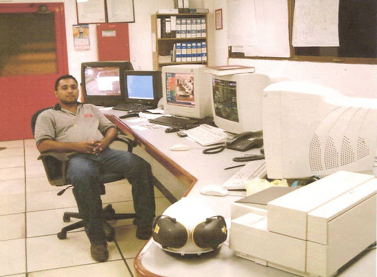
Cuarto de Control y Consolas para Operación de Plantas
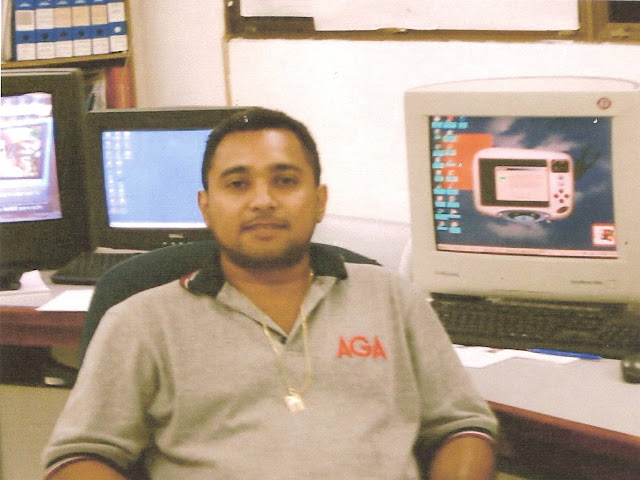
Cuarto de control principal - Tecnología de punta para la época

Cuarto de Control, Overview general de planta
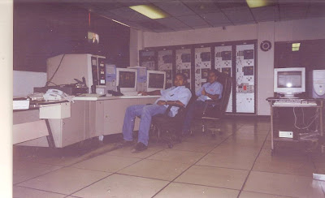
Sistemas de monitoreo y control de procesos
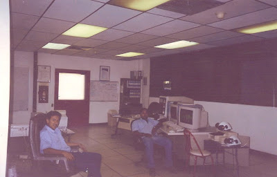
Acompañado de mi buen amigo George Rivas, estaba comenzando su carrera laboral
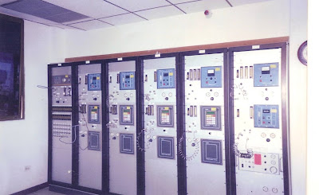
Vista de panel de analizadores de planta Maraton II
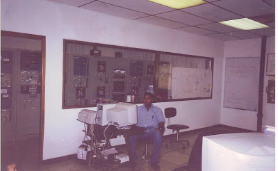
Vista de panel de analizadores de planta Maraton I y Pc's para Reporte de Producción
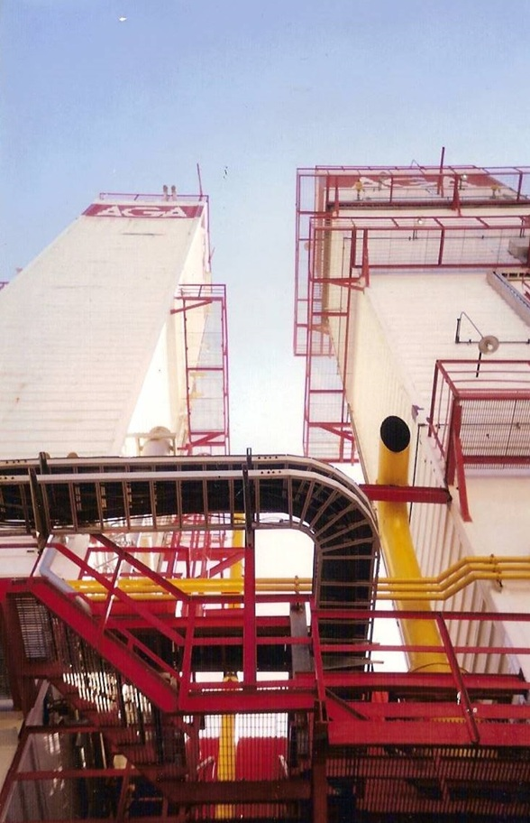
Vistas desde la base de las columnas de doble Rectificación Linde o ColdBox
Mi Experiencia Profesional
Durante mi tiempo en AGA GAS, me desempeñé en el área de control de procesos, donde pude aplicar mis conocimientos en informática y sistemas de control industrial. La empresa se caracterizaba por mantener altos estándares de calidad y tecnología avanzada para la época.
Inicio en AGA GAS
9 Dic 1991. Incorporación al equipo de trabajo en el área de Operaciones y control de procesos industriales.
Capacitación Técnica
Participación en programas de entrenamiento en sistemas de control y monitoreo.
Viajes de Capacitación
Oportunidades de formación en Colombia(Bogota) y Ecuador(Guayaquil), ampliando conocimientos y especializacion en Separacion de Gases del Aire.
Equipos y Tecnología
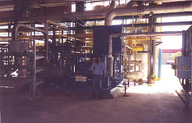
Vista de la Unidad de Purificación de Argón
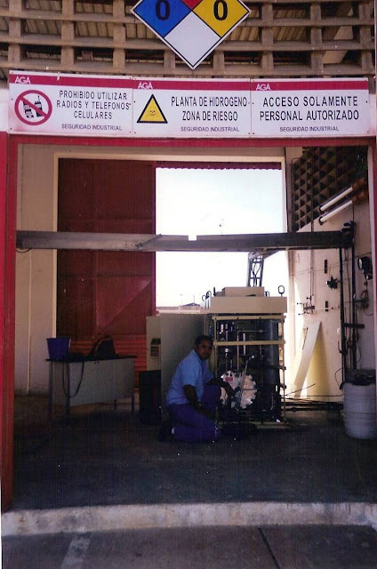
En pleno arranque de la planta de Hidrógeno
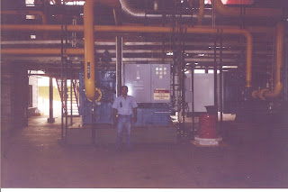
Vista general de las turbinas de expansión (fría)
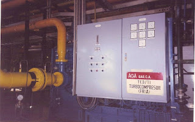
Vista frontal de las turbinas de expansión (fría)
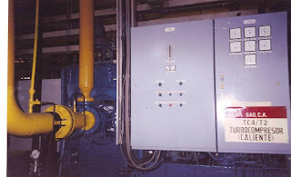
Vista frontal de las turbinas de expansión (caliente)
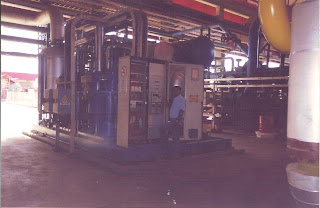
Panorámica de la extinta Unidad de refrigeración STAL
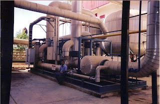
Paneles de control y monitoreo - Station Molecular Sieve M II
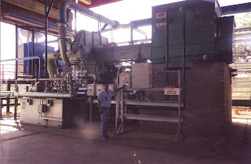
Panorámica del Turbo-Compresor TC 11
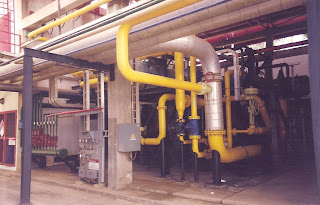
Parte frontal del compresor C-5001
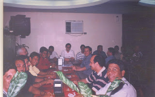
Recuerdos del Viaje a Guayaquil-Ecuador Curso de Gases del Aire
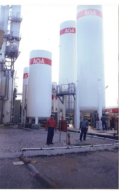
Visita a Planta Galapagos en Guayaquil-Ecuador
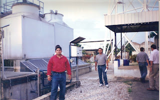
Estaciones de trabajo especializadas
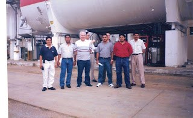
Recuerdos del Viaje a Guayaquil-Ecuador Curso de Gases del Aire
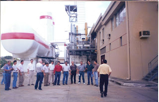
Recuerdos del Viaje a Guayaquil-Ecuador Curso de Gases del Aire
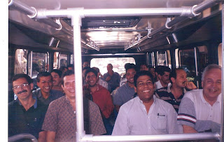
Recuerdos del Viaje a Guayaquil-Ecuador Curso de Gases del Aire
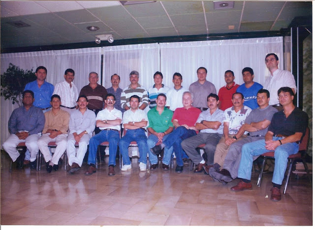
Grupo completo de los afortunados que hicimos el curso de Separación de gases del Aire. Brasileños, Colombianos, Ecuatorianos, Alemanes y Venezolanos.
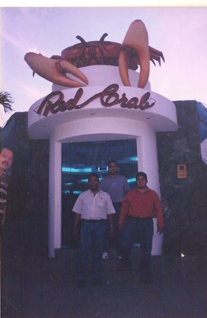
Recuerdos del Viaje a Guayaquil-Ecuador Curso de Gases del Aire. (la comida mas común en Guayaquil es la pulpa del Cangrejo)
Reflexión: Mi paso por AGA GAS fue fundamental en mi formación profesional. Los conocimientos adquiridos en sistemas de control industrial, la disciplina de trabajo en un ambiente corporativo de alto nivel, y las oportunidades de capacitación internacional, sentaron las bases para mi desarrollo posterior en el área tecnológica. Esta experiencia me enseñó la importancia de la precisión, la responsabilidad y el trabajo en equipo en entornos industriales complejos.